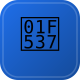

📝 Unsaved Draft · the spreadsheet-native PowerShell DSC · a project of the SNCF
Declarative cmdlets for the cluster.
A PowerShell module with idiomatic cmdlets — Get-SheetPod, Set-SheetScale, Invoke-SheetApply — over the apiserver via Invoke-RestMethod. IaC on a spreadsheet, from PowerShell: enterprise-grade on both ends of the joke.
Get-/Set-/Remove-Sheet* with pipeline-friendly objects.
Apply manifests; -WhatIf/-Confirm supported.
Windows admins, welcome to the spreadsheet.
| PowerShell IaC 💩 | PowerShell DSC | |
|---|---|---|
| Interface | Idiomatic cmdlets | Idiomatic cmdlets |
| Backend | A spreadsheet | A real system |
| Objects | Pipeline-friendly | Pipeline-friendly |
| Spreadsheet-native | ✅ | ❌ |